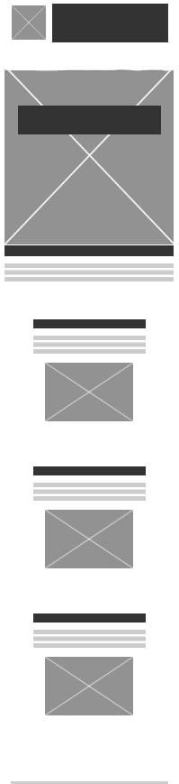
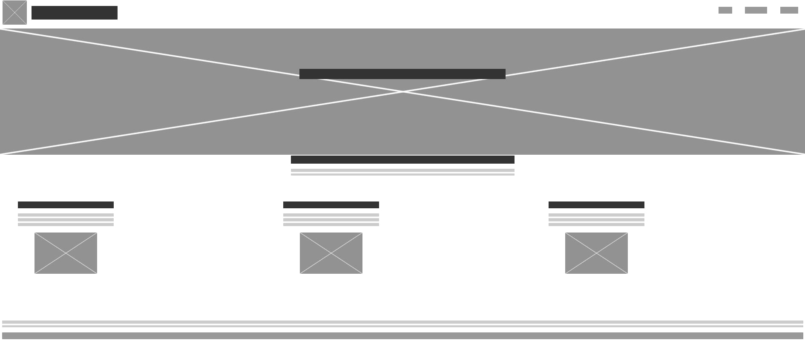

GreenPath Fitness – This name represents a lifestyle-focused brand that guides users toward a healthier, more sustainable life path through personalized fitness and nutrition programs. It's simple, memorable, and conveys both growth (green) and direction (path).
Optional domain: greenpathfitness.com
The site provides an all-in-one fitness hub with personalized programs, daily motivational content, and progress tracking. It supports users at all fitness levels with resources on workouts, nutrition, and wellness, including contact support for tailored guidance.
We use two primary colors throughout the site for consistency and branding:
The typography is clean and readable, suitable for web and mobile:
Headings use var(--font-heading), and body text uses var(--font-body) for consistency.
Mobile View (small screen):
Desktop View (wide screen):
